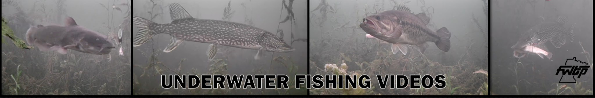
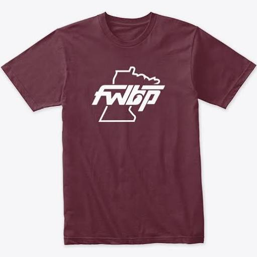
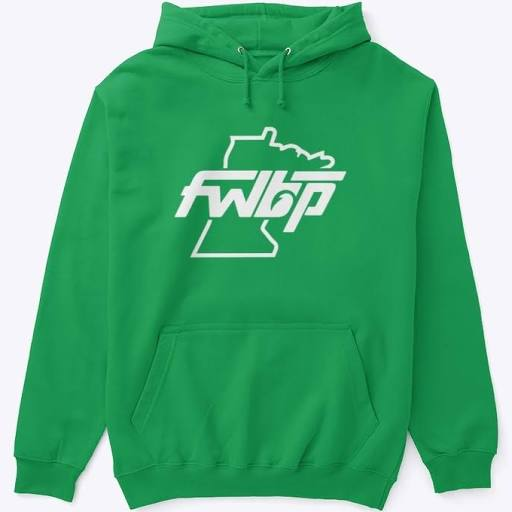
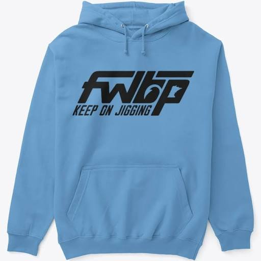

Fishing with Bryan
Minnesota fishing from the kayak to the ice hole.

On YouTube
Fishing with Bryan Prokuski
Come along for summer kayak trips, days on the ice, and a look at what happens below the surface. Sometimes Bryan’s kids join him, too.
Watch on YouTube
About Bryan
Bryan fishes Minnesota year-round. In summer he takes the kayak out for smallmouth. When the lakes freeze, he drops a camera through the ice to see what pike, walleye and perch do when a lure comes into view.
Bryan’s YouTube channel · Instagram

Video library
From underwater strikes to summer kayak trips.
Field notes
Short picture guides from the ice.
Underwater camera setupBryan’s early-ice video

Follow Bryan on a scouting trip as he brings an underwater camera out on early ice in Minnesota.
Watch the camera setup ↗How a jig movesThree illustrated steps
Follow the lure beneath the ice.
LiftBring the lure up. PauseHold it there. LowerBring it back down.
Walleye or yellow perch?Two fish side by side
Start with the tail on one and the bars on the other.
WalleyeWhite on the lower tail tip. Yellow perchDark bars across yellow sides.
Fish references: Minnesota DNR walleye and yellow perch.
FWBP merch
A look at Bryan’s classic Minnesota mark and Keep On Jigging designs. The former shop has closed.




